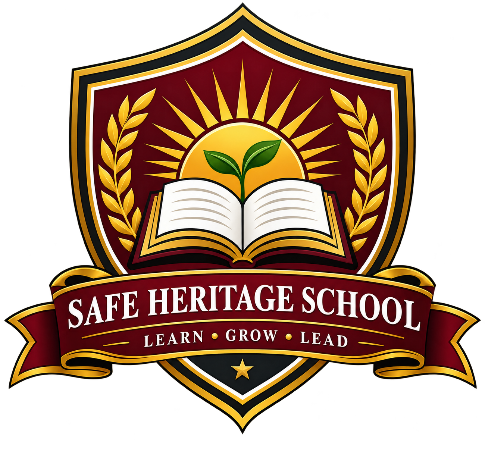

Every Child Can Grow
We recognise that learners have different strengths and encourage them to keep improving.

Safe Heritage SchoolEducation, character and opportunity since 2003.
Safe Heritage School is a learning community built around the belief that education should develop the whole child. We aim to provide a safe, welcoming and disciplined environment where students can grow academically, socially and personally.
Established in 2003, the school serves families through three branches in Abuja. Our learning pathway includes Creche, Primary, Secondary and A-level education, allowing learners to build their skills step by step as they prepare for future opportunities.
We value the partnership between students, teachers, parents and guardians. By working together, we can encourage curiosity, good habits, confidence and a sense of responsibility in every learner.
We recognise that learners have different strengths and encourage them to keep improving.
Academic achievement is important, and so are honesty, discipline, respect and diligence.
Students, staff and families all have a role in creating a positive school experience.
Our staff members help guide school activities and support learners throughout their educational journey.
Secretary
Supports school communication, records and administrative organisation.
Examination Officer
Helps coordinate examination activities and maintain orderly assessment processes.
Principal
Provides leadership and supports the academic and general development of the school.
We continue to work toward an environment where learners feel encouraged to try, supported when they face challenges and proud of their progress. Our goal is to help each student leave school with knowledge, confidence and values that will serve them throughout life.